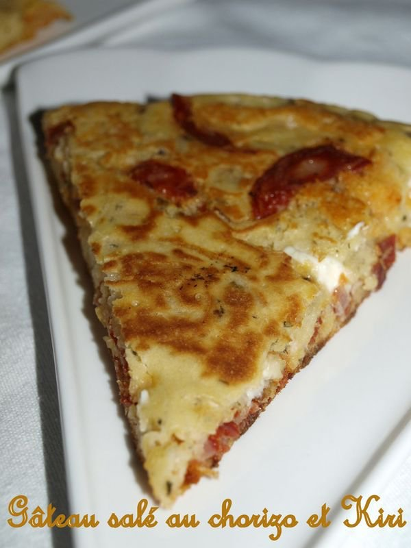

Gâteau salé Kiri chorizo à la poêle
Ingredients
×
- 150 g de farine
- 1 c. à c. de levure
- 15 cl de lait tiède
- 2 oeufs
- 3 c. à s. d'huile d'olive
- 100 g de chorizo
- 4 Kiri
- 60 g de gruyère râpé
- origan

Préparation
Étape 1
Mélanger 150 g de farine et 1 c. à c. de levure avec 15 cl de lait tiède.
Étape 2
Incorporer 2 oeufs et 3 c. à s. d'huile d'olive, puis fouetter jusqu’à obtenir un mélange homogène.
Étape 3
Couper en dés 100 g de chorizo et 4 Kiri. Les incorporer délicatement avec 60 g de gruyère râpé et de l’origan.
Étape 4
Verser dans une poêle (26cm) huilée chaude, couvrir et cuire environ 10min à feu moyen.
Étape 5
Retourner le gâteau et prolonger la cuisson quelques minutes à découvert.
Conseils
- Le titre d’origine mentionne de la courgette, sans quantité.